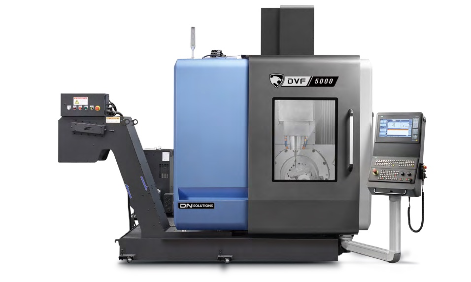

В наличии- Ходы X/Y/Z650/520/480 мм
- СтолØ630 × 450 мм
- Шпиндель15 000 об/мин
- ЧПУFanuc 31i-B5 Plus
- Срок поставки из наличиядо 1 месяца
- Цена3 889 848 CNYс НДС 22% (3 188 400 CNY без НДС), доставка DDP, ПНР и обучение
Полные характеристики серии: открыть страницу серии →
Технические характеристики
Характеристики
| Параметр | Значение |
|---|---|
| Перемещения X/Y/Z | 650 / 520 / 480 мм |
| Ось B (наклон) | 140° (от −30° до +110°) |
| Ось C (вращение) | 360° |
| Направляющие | роликовые |
| Точность позиционирования X/Y/Z | 0,008 / 0,007 / 0,007 мм |
| Повторяемость X/Y/Z | 0,005 / 0,004 / 0,004 мм |
| Позиционирование B/C | 9″ / 9″ |
| Повторяемость B/C | 5″ / 5″ |
| Размер стола | Ø630 × 450 мм |
| Макс. размер заготовки | Ø600 × H500 мм |
| Макс. нагрузка на стол | 400 кг |
| Т-образные пазы | 5 × 80 × 14H8 |
| Макс. скорость шпинделя | 15 000 об/мин (прямой привод, BBT40) |
| Мощность шпинделя | 18,5 / 11 кВт |
| Макс. крутящий момент | 118 Н·м |
| Быстрые перемещения X/Y/Z | 42 / 42 / 42 м/мин |
| Скорость осей B/C | 25 / 25 об/мин |
| Инструментальный магазин | 40 мест |
| Макс. диаметр инструмента | 75 мм (125 мм при пустых соседних ячейках) |
| Макс. длина инструмента | 300 мм |
| Макс. вес инструмента | 8 кг |
| Время смены инструмента | 1,3 с (от инструмента к инструменту), 3,8 с (от резки к резке) |
| Бак СОЖ | 500 л |
| Электропитание | 57,4 кВА |
| Габариты (Д × Ш × В) | 2795 × 2347 × 2867 мм |
| Масса станка | 8000 кг |
| Система ЧПУ | FANUC 31i-B5 Plus + CUFOS |
| Условия оплаты | 30% предоплата в течение 5 банковских дней после заключения договора, 70% в течение 5 банковских дней после подписания акта пусконаладки |
| Гарантия | 12 месяцев от даты подписания акта пусконаладки |
Комплектация
| № | Позиция |
|---|---|
| 1 | Система ЧПУ FANUC 31i-B5 Plus + CUFOS |
| 2 | Шпиндель BBT40 на прямом приводе 15 000 об/мин, масляное охлаждение |
| 3 | Интеллектуальная компенсация теплового смещения (датчики на шпинделе и станине) |
| 4 | Поворотный стол Ø630 × 450 мм |
| 5 | Абсолютные энкодеры по осям X, Y, Z, B, C |
| 6 | Охлаждение двигателей подач, направляющих и ШВП, двигателя оси C |
| 7 | Магазин на 40 инструментов с автоматическим сменщиком |
| 8 | Автоматическая система смазки, стандартная подача СОЖ, поддон для стружки |
| 9 | Трансформатор электрошкафа, LED-освещение, 3-цветная сигнальная лампа |
| 10 | Портативный пульт MPG |
| 11 | Выравнивающие блоки и болты, анкерные болты |
| 12 | Инструменты для сборки и эксплуатации |
| 13 | Полностью закрытый кожух рабочей зоны, блокировка защитной двери |
| 14 | Руководства по эксплуатации |
| 15 | Опции: оптические линейные шкалы HEIDENHAIN по осям X, Y, Z |
| 16 | Опции: ременный конвейер стружки (слева) и тележка для стружки |
| 17 | Опции: измерение инструмента RENISHAW RTS и заготовки RENISHAW RMP60 |
| 18 | Опции: подача СОЖ через шпиндель 20 бар |
| 19 | Опции: кондиционер электрошкафа, масляный скиммер, пневмопистолет и пистолет СОЖ |
| 20 | Услуги: доставка DDP до покупателя, пусконаладка, инструктаж персонала |
Станок на складе. Технические характеристики, комплектацию и сроки уточняйте у менеджера. Характеристики приведены по данным производителя; точную конфигурацию, цену и срок поставки уточняйте у менеджера.
Паспорт станка (PDF)Спецификация производителя DN Solutions · 9 стр.